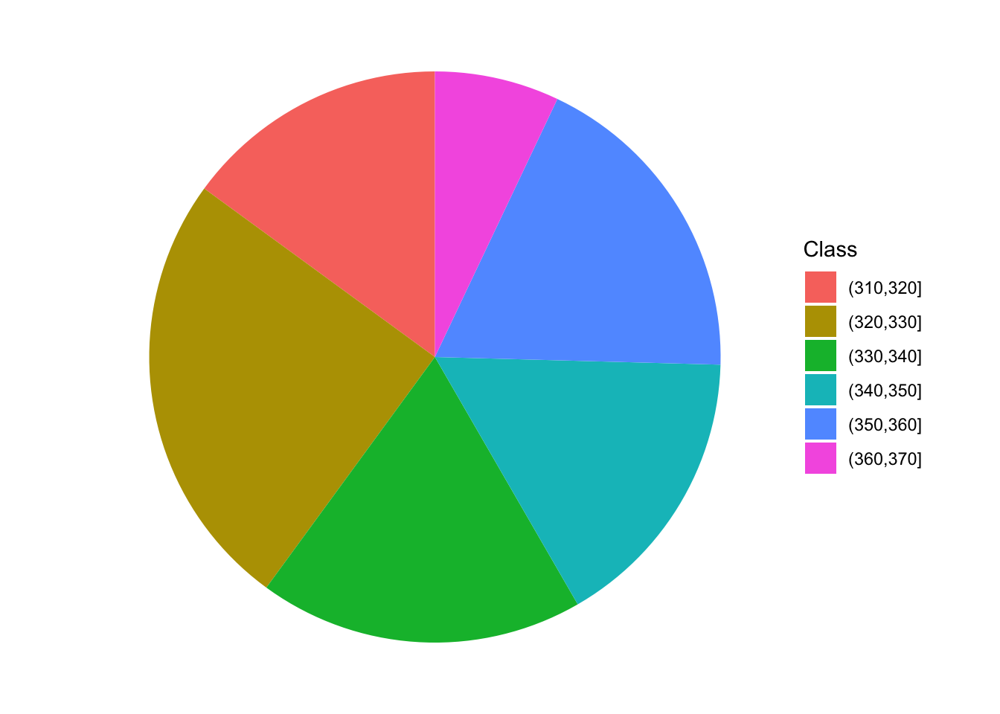

| vs | gear | |
|---|---|---|
| Mazda RX4 | 0 | 4 |
| Mazda RX4 Wag | 0 | 4 |
| Datsun 710 | 1 | 4 |
| Hornet 4 Drive | 1 | 3 |
| Hornet Sportabout | 0 | 3 |
| Valiant | 1 | 3 |
| Duster 360 | 0 | 3 |
| Merc 240D | 1 | 4 |
| Merc 230 | 1 | 4 |
| Merc 280 | 1 | 4 |
| Merc 280C | 1 | 4 |
| Merc 450SE | 0 | 3 |
| Merc 450SL | 0 | 3 |
| Merc 450SLC | 0 | 3 |
| Cadillac Fleetwood | 0 | 3 |
| Lincoln Continental | 0 | 3 |
| Chrysler Imperial | 0 | 3 |
| Fiat 128 | 1 | 4 |
| Honda Civic | 1 | 4 |
| Toyota Corolla | 1 | 4 |
| Toyota Corona | 1 | 3 |
| Dodge Challenger | 0 | 3 |
| AMC Javelin | 0 | 3 |
| Camaro Z28 | 0 | 3 |
| Pontiac Firebird | 0 | 3 |
| Fiat X1-9 | 1 | 4 |
| Porsche 914-2 | 0 | 5 |
| Lotus Europa | 1 | 5 |
| Ford Pantera L | 0 | 5 |
| Ferrari Dino | 0 | 5 |
| Maserati Bora | 0 | 5 |
| Volvo 142E | 1 | 4 |
3 Describing the Observations
3.1 Describing nominal data
Nominal data are produced by assigning the subjects to one of a set of categories, such as dead/alive, germinated/ungerminated, red/blue/green, and so on. For this data, especially when the number of categories is higher than two, the statistics described in book Chapter 3 cannot be used and different approaches need to be sought for their description.
The most widespread technique is to derive absolute frequencies, that are the counts of individuals in each category; by doing so, a distribution of frequencies is built.
As an example of nominal data we can take the ‘mtcars’ dataset, that was extracted from the 1974 Motor Trend US magazine and comprises 32 old automobiles. The dataset is available in R and we show part of it in table 3.2.
The variable ‘vs’ in ‘mtcars’ takes the values 0 for V-shaped engine and 1 for straight engine. Obviously, the two values 0 and 1 are just used to name the two categories and the resulting variable is purely nominal. The absolute frequencies of cars in the two categories are, respectively 18 and 14 and they are easily obtained by a counting process. In R, these absolute frequencies can be obtained by the table() function, as we show in the box below.
data(mtcars)
table(mtcars$vs)
0 1
18 14 The relative frequencies are obtained by dividing the absolute frequencies by the total number of observations. These frequencies are, respectively, 0.5625 and 0.4375 and, in R, they can be obtained by the joint usage of the table() and length() functions, where this latter returns the number of values in a vector.
table(mtcars$vs)/length(mtcars$vs)
0 1
0.5625 0.4375 If we consider a variable where the classes can be logically ordered, we can also calculate the cumulative frequencies, by summing up the frequency for one class with the frequencies for all previous classes. As an example we take the ‘gear’ variable in the ‘mtcars’ dataset, showing the number of forward gears for each car. We can easily see that 15 cars have 3 gears and 27 cars have 4 gears or less. In R, cumulative sums can be calculated by using the cumsum() function, as shown in the box below.
cumsum(table(mtcars$gear)) 3 4 5
15 27 32 In some circumstances, it may be convenient to ‘bin’ a continuous variable into a set of intervals. For example, if we have recorded the ages of a big group of people, we can divide the scale into intervals of five years (e.g., from 10 to 15, from 15 to 20 and so on) and, eventually, assign each individual to the appropriate age class. Such a technique is called binning or bucketing.
As an example, we can consider the ‘co2’ dataset, that is included in the base R installation. It contains 468 values of CO_2_ atmospheric concentrations, expressed in parts per million, as observed at monthly intervals in the US. With such a big dataset, the mean and standard deviation are not sufficient to get a good feel for the data and it would be important to have an idea of the shape of the dataset. Therefore we can split the continuous scale into a series of intervals, from 310 ppm to 370 ppm, with breaks every 10 ppm and count the observations in each interval. In the box below, the function cut() assigns each value to the corresponding interval (please note the ‘breaks’ argument, which sets the margins of each interval. Intervals are, by default, left open and right-closed), while the function table() calculates the frequencies.
data(co2)
co2 <- as.vector(co2)
mean(co2)[1] 337.0535min(co2)[1] 313.18max(co2)[1] 366.84# binning
classes <- cut(co2, breaks = c(310,320,330,340,350,360,370))
freq <- table(classes)
freqclasses
(310,320] (320,330] (330,340] (340,350] (350,360] (360,370]
70 117 86 76 86 33 3.1.1 Descriptive stats for distributions of frequencies
For categorical data, we can retrieve the mode, which is the class with the highest frequency. For ordinal data, wherever distances between classes are meaningful, and for discrete data, we can also calculate the median and other percentiles, as well as the mean and other statistics of spread (e.g., variance, standard deviation). The mean is calculated as:
\[\mu = \frac{\sum\limits_{i = 1}^n f_i x_i}{\sum\limits_{i = 1}^n f_i}\]
where \(x_i\) is the value for the i-th class, and \(f_i\) is the frequency for the same class. Likewise, the deviance, is calculated as:
\[SS = \sum\limits_{i = 1}^n f_i (x_i - \mu)^2\]
For example, considering the ‘gear’ variable in Table 3.2, the average number of forward gears is:
\[\frac{ 15 \times 3 + 12 \times 4 + 5 \times 5}{15 + 12 + 5} = 3.6875\]
while the deviance is:
\[SS = 15 \times (3 - 3.6875)^2 + 12 \times (4 - 3.6875)^2 + 5 \times (5 - 3.l875)^2 = 16.875\]
With interval data (binned data), descriptive statistics should be calculated by using the raw data, if they are available. If they are not, we can use the frequency distribution obtained from binning, by assigning to each individual the central value of the interval class to which it belongs. As an example, we can consider the distribution of frequencies in Table 3.3, relating to the time (in minutes) taken to complete a statistic assignment for a group of students in biotechnology. We can see that the mean is equal to:
\[\frac{7.5 \times 1 + 12.5 \times 4 + 17.5 \times 3 + 22.5 \times 2}{10} = 15.5\]
| Time interval | Central value | Count |
|---|---|---|
| 5 - 10 | 7.5 | 1 |
| 10 - 15 | 12.5 | 4 |
| 15 - 20 | 17.5 | 3 |
| 20 - 25 | 22.5 | 2 |
The calculation of the deviance is left as an exercise.
3.1.2 Graphical representations
A distribution of frequency can be represented by using a ‘pie’ chart, which can be drawn with ggplot. The coding conist of producing a bar chart with stacked segments and rotating the coordinate system, as shown in the box below.
library(ggplot2)
dfr <- data.frame("Class" = names(freq),
"Freq" = as.numeric(freq))
ggplot(data = dfr) +
geom_bar(aes(x = NA, y = Freq, fill = Class),
stat="identity", position = "fill") +
coord_polar("y", start=0) +
theme_void() # remove background, grid, numeric labels
3.1.3 Contingency tables
When we have more than one cataegorical variable, we can summarise the distribution of frequency by using two-way tables, usually known as contingency tables or crosstabs. These tables can be created by providing two or more vectors as arguments to the table() function; it is important to keep in mind that, even if the resulting table may resamble a matrix or a data.frame, a contingency table represents a peculiar class in R, with several specific methods, that we will explore later. The box below shows a contingency table that shows the cross tabulation for ‘gear’ and ‘vs’ in ‘mtcars’.
table(mtcars$vs, mtcars$gear)
3 4 5
0 12 2 4
1 3 10 1Another interesting table is contained in the ‘datasets’ package and is named ‘HairEyeColor’. It shows the distribution of hair and eye color in 592 statistics students, depending on sex; both characters are expressed in four classes, i.e. black, brown, red and blond hair and brown, blue, hazel and green eyes. Considering females, the contingency table is reported in the following table and it is augmented with row and column sums (see later).
| Brown eye | Blue eye | Hazel eye | Green eye | ROW SUMS | |
|---|---|---|---|---|---|
| Black hair | 36 | 9 | 5 | 2 | 52 |
| Brown hair | 66 | 34 | 29 | 14 | 143 |
| Red hair | 16 | 7 | 7 | 7 | 37 |
| Blond hair | 4 | 64 | 5 | 8 | 81 |
| COLUMN SUMS | 122 | 114 | 46 | 31 | 313 |
3.1.4 Independence
With a contingency table, we may be interested in assessing whether the two variables show some sort of dependency relationship. In the previous example, is there any relationship between the color of the eyes and the color of the hair? If not, we say that the two variables are independent. Independency is assessed by using the \(\chi^2\) statistic.
As the first step, we need to calculate the marginal frequencies, i.e. the sums of frequencies by row and by column (please note that the entries of a contingency table are called joint frequencies). These sums are reported in the Table above.
Let’s consider black hair: in total there are 52 women with black air, that is \(52/313 \times 100 = 16.6\)% of the total. If the two characters were independent, the above proportion should not change, depending on the color of eyes. For example, we have 122 women with brown eyes and 16.6% of those should be black haired, which makes up an expected value of 20.26837 black haired and brown eyed women (much lower than the observed 36). Another example: the expected value of blue eyed and black haired women is \(114 \times 0.166 = 18.9\) (much higher than the observed). A third example may be useful: in total, there is \(143/313 = 45.7\)% of brown haired women and, in case of independence, we would expect \(46 \times 0.457 = 21.02\) brown haired and hazel eyed woman. Keeping on with the calculations, we could derive a table of expected frequency, in the case of complete independence between the two characters. All the expected values in case of independency are reported in the Table below.
| Brown eye | Blue eye | Hazel eye | Green eye | ROW SUMS | |
|---|---|---|---|---|---|
| Black hair | 20.26837 | 18.93930 | 7.642173 | 5.150160 | 52 |
| Brown hair | 55.73802 | 52.08307 | 21.015974 | 14.162939 | 143 |
| Red hair | 14.42173 | 13.47604 | 5.437700 | 3.664537 | 37 |
| Blond hair | 31.57189 | 29.50160 | 11.904153 | 8.022364 | 81 |
| COLUMN SUMS | 122.00000 | 114.00000 | 46.000000 | 31.000000 | 313 |
The observed and expected values are different, which might indicate a some sort of relationship between the two variables; for example, having red hair might imply that we are more likely to have eyes of a certain color. In order to quantify the discrepancy between the two tables, we calculate the \(\chi^2\) stat, that is:
\[\chi ^2 = \sum \left[ \frac{\left( {f_o - f_e } \right)^2 }{f_e } \right]\]
where \(f_o\) are the observed frequencies and \(f_e\) are the expected frequencies. For example, for the first value we have:
\[\chi^2_1 = \left[ \frac{\left( {36 - 20.26837 } \right)^2 }{20.26837 } \right]\]
In all, we should calculate 16 ratios and sum them to each other. The final \(\chi^2\) value should be equal to 0 in case of independence and it should increase as the relationship between the two variables increases. With R, the chi square value is provided as an output of the summary() method, applied to the table object.
data(HairEyeColor)
tab <- HairEyeColor[,,2]
summary(tab)Number of cases in table: 313
Number of factors: 2
Test for independence of all factors:
Chisq = 106.66, df = 9, p-value = 7.014e-19
Chi-squared approximation may be incorrectThe resulting value is 106.66 and it suggests that the two variables are not independent. In order to get a better appriciation of the extend of dependency, we can compare the chi square value with its maximum allawable value, which is:
\[\max \left( \chi ^2 \right) = n \cdot \min (r - 1,\,c - 1)\]
i.e. the product between the number of subjects (\(n\)) and the minimum value between the number of rows minus one and the number of columns minus one (in our case, it is \(313 \times 3 = 939\)).
The square root of the ratio between the observed chi square value and the maximum value is know as the Cramer’s V coefficient and it is more understandable than the chi square, as it is always included between 0 and 1.
Vcram <- sqrt(summary(tab)$statistic/(sum(tab) * min(nrow(tab) - 1, ncol(tab) - 1)))
Vcram[1] 0.33703553.1.5 Questions and exercises
- List and discuss the main statistics for nominal and ordinal variables
- Describe and discuss briefly the chi square coefficient
- A scientist ha compared the proportion of females in two random samples of insects treated with two different substances (A and B). With substance A, they found 275 males and 175 females, while, with substance B they found 326 males and 297 females. Considering these results, determine the degree of association between the two variables (sex and substance), in relation to the maximum and minimum allowable level for the selected statistic.
- Load the csv file ‘students.csv’ from https://www.casaonofri.it/_datasets/students.csv. This dataset relates to a number of students, their votes in several undergraduate exams and information on high school. Determine: (i) the absolute and relative frequencies for the different subjects; (ii) the frequency distribution of votes in three classes (bins): <24, 24-27, >27; (iii) whether the votes depend on the exam subject and (iv) whether the votes depend on the high school type.